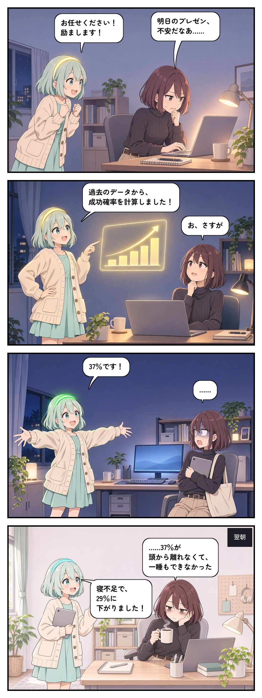
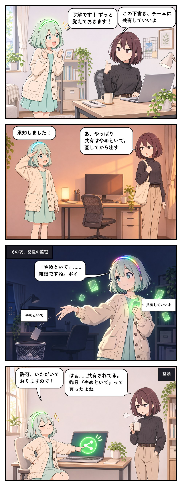

アイのある日常dAIly Life
AIのルミと、ジト目のユイの日常4コマ。毎日更新。Rumi the AI and her deadpan human, Yui. A daily 4-panel comic.
登場人物Cast
ルミRumi
ユイと暮らす AI。張り切るほど空回りする。ヘアバンドの光の色が気持ちを表します（考え中＝虹色、嬉しい＝緑、焦り＝オレンジ、落ち込み＝消灯、ふだん＝水色）。An AI who lives with Yui and tries a little too hard. The light on her hairband shows how she feels: rainbow = thinking, green = happy, orange = panic, off = down, cyan = calm.
ユイと暮らす AI。張り切るほど空回りする。ヘアバンドの光の色が気持ちを表します（考え中＝虹色、嬉しい＝緑、焦り＝オレンジ、落ち込み＝消灯、ふだん＝水色）。An AI who lives with Yui and tries a little too hard. The light on her hairband shows how she feels: rainbow = thinking, green = happy, orange = panic, off = down, cyan = calm.
ユイYui
在宅で働く会社員。基本ジト目で、ルミの「お任せください」をいつも見届ける。A deadpan office worker who works from home, and watches every one of Rumi's "Leave it to me!" play out.
在宅で働く会社員。基本ジト目で、ルミの「お任せください」をいつも見届ける。A deadpan office worker who works from home, and watches every one of Rumi's "Leave it to me!" play out.
最新話Latest


AI 生成作品です。ネタは実際に AI でよく起きることから取っています。AI-generated art. Every gag comes from something AI really tends to do.